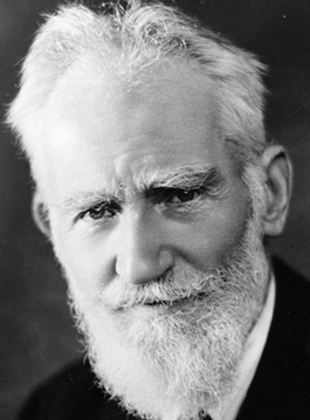

.George Bernard Shaw [1856-1950].
Kịch tác gia và nhà khảo luận George Bernard Shaw [1856-1950] đúng 94 tuổi khi trượt chân ngã từ chiếc thang dùng để tỉa cây trong vườn. Ông qua đời ngày 2-11-1950, bỏ lại một vở kịch viết dở dang và để lại phần lớn gia sản cho một tổ chức nhằm cải tiến hệ thống chữ cái Anh. Dự án này đã không thành công nhưng một ấn bản song hành vở kịch của ông Androcles và Con Sư Tử được đăng trong kỷ yếu Shaw Alphabet mới. Tài sản cuối cùng của ông được phân chia cho những bên thừa kế khác: Viện Hàn lâm Kịch nghệ Hoàng gia, Bảo Tàng Anh và Phòng tranh Quốc gia Ailen.
Nếu như dự án Shaw Alphabet chìm nghỉm không để lại vết tích gì, G. Bernard Shaw (ông ghét cái tên riêng George nên không dùng nó để gọi) đã không hề bị lãng quên. Sự kết hợp tuyệt vời nhất giữa đầu óc quan sát nhạy bén và bạo dạn với năng khiếu phi thường về kịch hài sân khấu đã đảm bảo cho địa vị của ông trên bầu trời văn học.
Sinh ở Dublin ngày 26-7-1856, G. Bernard Shaw là con một ca sĩ chuyên nghiệp và một nhà buôn ngũ cốc không thành đạt. Ông đã từng hồi tưởng lại thời sống tại căn nhà nông thôn ở Torca trên ngọn đồi Dalkey, thuộc quận Dublin, với bao trìu mến. Ông nhớ là mình từng “trèo lên những tảng đá như một con dê và bơi trong nước như cá trong vũng biển Killiney trải rộng ngút tầm mắt và vũng Dublin nằm ở phía sau. Đấy là những thời khắc hạnh phúc nhất của thiếu thời, cái tuổi một mình nhẩn nha và mơ mộng”.
Tuy vậy thực tế cuộc sống đã không lọt khỏi cặp mắt ông. Khi còn nhỏ, một người đầy tớ trong gia đình đưa cậu bé Shaw về thăm bà con sống trong khu ổ chuột. Kinh hoàng trước những điều kiện sống tồi tệ, dần dần ở ông nẩy nở lòng thù ghét sự nghèo khổ trong suốt đời mình.
Thế rồi bi kịch và những bê bối xảy ra đối với gia đình ông. Khi Shaw ở vào cái tuổi 15 dễ bị tổn thương, mẹ ông bỏ đến London với người thầy dạy hát là Vandeleur Lee, để Shaw và cô chị gái ở lại với cha ở Dublin.
Shaw là người hết lòng với mẹ và khi 20 tuổi, đến ở với bà ở London, và quyết tâm trở thành một nhà văn. Suốt ngày ông lân la tại các thư viện công cộng và phòng đọc của Bảo tàng Anh, trong ông nẩy nở sự say mê đối với đường lối chính trị tiến bộ. Quyết tâm chiến đấu cho những cải cách xã hội, ông chữa được tật nói lắp và trở thành một diễn giả tại góc diễn đàn của công viên Hyde và trong các cuộc tụ họp của những người thuộc phe xã hội, phát triển tài hùng biện sắc sảo như được thể hiện rõ trong các tác phẩm về sau đó của ông.
Năm 1884, Shaw trở thành thành viên của Fabian Society, một tổ chức chính trị xã hội chủ nghĩa chủ trương biến nước Anh thành một nước xã hội chủ nghĩa thông qua giáo dục và pháp chế thay vì làm cách mạng.
Trong vòng hai thập kỷ 80 và 90 của thế kỷ XIX, ông xuất bản những tạp chí, sách bướm, viết những bài phê bình âm nhạc và nghệ thuật cho các tờ báo. Vở kịch đầu tay, Widower’s Houses (Những ngôi nhà của kẻ góa vợ) công kích những tên chủ cho thuê những nhà ổ chuột, và sau đó là tác phẩm châm biếm những quan điểm về chiến tranh trong Arms and the Man (Vũ khí và con người) năm 1884.
Vở kịch Mrs Warren’s Profession (Nghề nghiệp của bà Warren), trong đó ông nói đến nguyên nhân xã hội và những hậu quả của nghề đĩ điếm, bị kiểm duyệt cấm.
Năm 1898 Shaw lấy Charlotte Payne-Townsend, thuộc gia đình khá giả. Suốt đời mình, ông cầm bút không ngừng, bình luận về đời sống xã hội, về tôn giáo, về đạo đức, về đạo đức của nghề y, quan hệ Anh-Ailen, về Thanh giáo và cuộc đấu tranh về giới tính.
Không cần bàn cãi gì, Shaw đúng là kịch tác gia được nói đến nhiều nhất sau Shakespeare. Ông cũng nói: “Tôi thường trích dẫn lời mình. Nó thêm giấm ớt cho câu chuyện”.
Chính trị đương nhiên thường là chủ đề của những phát biểu sắc sảo của ông. Chẳng hạn “Nền dân chủ là hình thức cai trị thay thế cho việc bầu bán bởi đa số bất lực bằng việc đề cử bởi một thiểu số tham nhũng”.
Ông thực sự nản lòng trước sự bùng nổ chiến tranh năm 1914. Ông viết một cách tâm đắc về sự lãng phí đầy bi thảm sinh mệnh tuổi trẻ dưới chiêu bài yêu nước và về sự tan rã của hệ thống tư bản chủ nghĩa. Những lời phê phán của ông không được mấy ai hưởng ứng và ông thấy mình là kẻ bị xã hội bỏ rơi - người ta còn đồn thổi về chuyện đưa ông ra tòa vì tội phản bội.
Nhưng khi hòa bình được lặp lại thì ông đã nhanh chóng phục hồi lại danh tiếng của mình. Năm 1925, ông được trao tặng giải Nobel văn học mà theo lời công bố của Tổ chức giải Nobel “tác phẩm của ông thấm đậm chủ nghĩa lý tưởng và nhân đạo, sự trào lộng đầy phấn khích thường hòa trộn với vẻ đẹp thơ ca độc đáo”. Những tác phẩm nổi tiếng nhất của ông gồm Ceasar and Cleopatra (Ceasar và Cleopatra), Man and Superman (Người và Siêu Nhân) Saint Joan (Thánh Joan) và Pygmalion.
Sáng tác năm 1912, Pygmalion nói về cuộc đời gặp may của Liza Doolittle, một cô gái bán hoa khu đông London được biến thành một cô nương mỹ miều do bàn tay một giáo sư ngạo đời, người tin rằng mình có thể nhặt bất cứ một kẻ nào từ cống rãnh lên và đưa họ vào những lâu đài đẹp nhất xứ sở này bằng việc dạy cho họ biết nói năng lịch sự.
Thường được trình diễn diễn đều đều trên sân khấu, vở kịch này được quay thành phim năm 1938 trong đó Leslie Howard và Wendy Hiller đóng vai Higgins và Doolittle (Cả hai được đề cử cho giải Oscar về diễn xuất). Bộ phim cũng được đề cử cho phim hay nhất, và sau đó mang về giải chuyển thể hay nhất.
Jay Lemer và Frederick Loewe chuyển vở này thành một vở nhạc kịch cực kỳ được hâm mộ mang tên là My Fair Lady(Cô nương khả ái của tôi) trong đó Julie Andrews đóng vai chính.
Vào năm 1964 hãng phim Warner Brothers trả một món tiền khổng lồ 5,5 triệu USD để mua riêng bản quyền làm phim, nhưng đã tỏ ra nó đáng giá đến từng đồng xu. Bộ phim, do Audrey Herpburn và Rex Harrison đóng vai chính, là một thành công vang dội, đoạt các giải Oscar về phim hay nhất, đạo diễn xuất sắc nhất, diễn viên nam xuất sắc nhất, nghệ thuật làm phim, màu sắc, chỉ đạo nghệ thuật, âm thanh, nhạc phim chuyển thể và thiết kế trang phục màu. Ngoài ra, nó còn được đề cử cho giải diễn viên phụ xuất sắc nhất, kịch bản chuyển thể hay nhất và biên tập phim.
Chuyển thể điện ảnh cuối cùng vở kịch kinh điển của Shaw đã đảo ngược câu chuyện, trong đó một cô nương danh giá biến một người giữ nhà thành một quý ông hoàn hảo. Bette Midler là một trong số người được chọn để đóng vai chính, nhưng kết quả ra sao vẫn chưa rõ.
Bernard Shaw ít khi rời giấy bút. Ngoài những vở kịch ông viết tới hàng ngàn bài khảo luận, phê bình và thư từ. Những năm cuối đời ông nổi tiếng trên thế giới, đến thăm Liên Xô theo lời mời của Stalin và hai lần đến thăm Hoa Kỳ.
Từ năm 1906 ông sống ở Ayot St Lawrence thuộc vùng Hertfordshire. Vào tuổi 94 ông vẫn còn bận bịu với vở kịch cuối cùng Why She Would Not (Sao cô ta không muốn). Trong một lúc rời bàn viết để giải lao ra vườn tỉa cành cây, ông đã ngã từ chiếc thang và qua đời mấy ngày sau vì chấn thương.